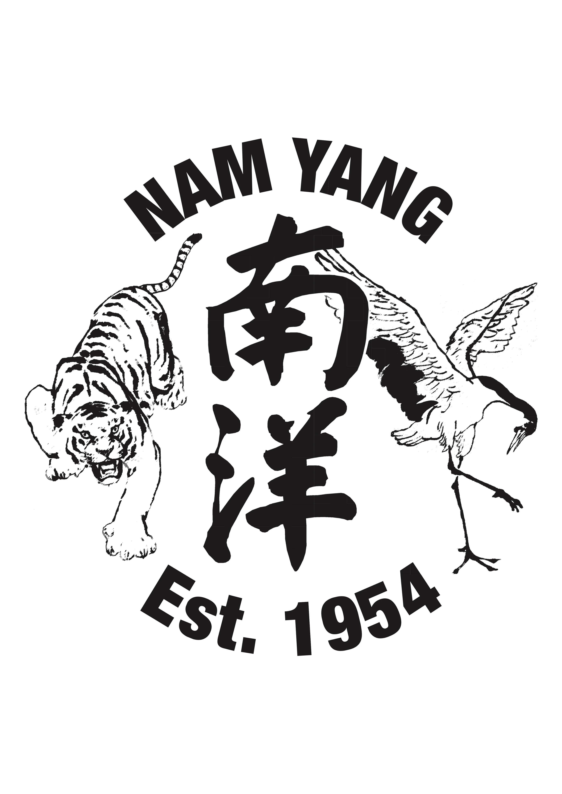

Traditional training methods for strength, health and personal development.

Nam Yang Pugilistic Association was founded in Singapore in 1954 by Master Ang Lian Huat.
Having studied several martial and healing arts throughout his life, Master Ang brought them together into a single system where they could be preserved, practised and passed on to future generations. Among these were Tiger-Crane Kung Fu, Shuang Yang, traditional Shaolin weapons, Chi Kung and methods of external medicine.
Rather than focusing on a single style, Nam Yang developed as a complete training system, combining hard and soft practice, external and internal development, health cultivation and martial skill.
Over the decades, these arts have been passed from teacher to student, preserving both the techniques and the spirit of the tradition. Today, the school continues under the guidance of Master Iain Armstrong in Thailand, where students from around the world come to train and immerse themselves in the arts.
The practices presented on this page are some of the arts that have been taught within the Nam Yang tradition for generations and continue to be practised today.
Tong Ling Chi Kung is often the first art introduced to students entering the Nam Yang system and remains one of its most widely practised methods of training.
Combining breathing, gentle movement and focused awareness, it was developed as a complete system for improving health, vitality and overall well-being. Unlike many forms of exercise, the emphasis is not on force or exertion but on learning to move with greater relaxation, efficiency and balance.
The practice consists of a series of simple exercises designed to mobilise the joints, improve posture, encourage healthy circulation and release unnecessary tension from the body. Over time, students develop a greater awareness of how they move, breathe and respond to stress, both during practice and in everyday life.
One of the reasons Tong Ling Chi Kung has remained so popular is its accessibility. It can be practised by people of almost any age or fitness level and requires very little space or equipment. What appears simple at first gradually reveals increasing depth as coordination, relaxation and internal awareness begin to develop.
Within the Nam Yang tradition, Tong Ling Chi Kung is valued not only as a health practice but also as a foundation for the other arts. The principles learned here — relaxation, posture, breathing and efficient movement — continue to reappear throughout the wider system.
For many practitioners, Tong Ling Chi Kung becomes a daily practice that supports both physical health and mental clarity, providing a simple and effective way to maintain balance in an increasingly busy world.

“Be relaxed, take your time, be consistent and enjoy the benefit you will get in the training.”— Master Tan Soh Tin

Shuang Yang is one of the most distinctive arts preserved within the Nam Yang tradition. Originating from the White Crane system of Fukien Province, it combines elements of Chi Kung, meditation and martial movement into a continuous flowing practice.
Unlike systems that rely on strength or speed, Shuang Yang encourages practitioners to develop relaxation, balance and awareness. Movements are performed slowly and without interruption, creating a rhythm that links breath, posture and intention into a single coordinated action.
As students progress, what first appears to be a sequence of graceful movements gradually reveals increasing depth. The practice develops concentration, coordination and sensitivity while encouraging a calmer and more focused state of mind. For this reason it is often described as a form of meditation in movement.
Within Nam Yang, Shuang Yang is considered a lifelong practice. The same exercises can benefit a beginner taking their first lesson and an experienced practitioner who has spent decades exploring the art. Rather than pursuing complexity, students continually return to the same principles of relaxation, balance and flow, discovering new layers of understanding over time.
For many practitioners, Shuang Yang becomes more than a training method. It offers a way to slow down, reconnect with the body and cultivate a quality of calm attention that extends beyond practice into everyday life.
Building flexibility, resilience and freedom of movement through traditional training methods.
Within the Nam Yang tradition, stretching has always been regarded as an important part of training. Long before mobility became a popular topic in modern fitness, practitioners understood that strength, balance and longevity all depend upon maintaining freedom of movement throughout the body.
Rather than pursuing flexibility as an end in itself, the aim is to develop a body that moves naturally, efficiently and without unnecessary tension. Through a combination of dynamic and static exercises, students gradually improve mobility in the joints, length in the muscles and a greater awareness of posture and alignment.
These exercises support every other aspect of practice. A more mobile body allows movements to be performed with greater ease, improves balance and coordination, and helps reduce the risk of injury during training. Whether practising Chi Kung, Shuang Yang or the more demanding martial arts of the system, flexibility and mobility provide an important foundation upon which further skills can be developed.
Many students also find that the benefits extend well beyond training. Improved posture, reduced stiffness and greater comfort in everyday movement are often among the first changes people notice. For those who spend long hours sitting, working at a desk or carrying the physical demands of daily life, regular stretching can become a simple yet powerful way to maintain health and wellbeing.
As with all traditional training, progress is approached patiently and consistently. Flexibility is not measured by dramatic positions or quick results, but by the gradual development of a healthier, more resilient and more capable body.
Whether someone is seeking better health, improved athletic performance or simply the ability to move more freely through life, stretching and mobility remain an essential part of the Nam Yang system.

A specialised system designed to strengthen the body's connective tissues while developing structure, resilience and internal power.

Vein & Tendon Chi Kung is a specialised training system designed to strengthen the body's connective tissues while developing structure, stability and resilience. Rather than relying on muscular force alone, the practice focuses on creating strength through the coordinated use of the entire body.
Through a series of carefully structured postures and movements, practitioners learn to stretch and strengthen the tendons, fascia and supporting tissues that connect the body together. Over time this develops greater stability in the joints, improved posture and a stronger physical foundation for both daily life and martial arts practice.
The training is performed with deliberate attention to alignment, breathing and relaxation. While the exercises can be physically demanding, the aim is not to create unnecessary tension. Instead, students learn to generate strength while maintaining awareness and control, allowing the body to work as a connected whole.
Many practitioners find that regular training improves joint health, balance and overall resilience. The development of elastic, spring-like power throughout the body also provides an important bridge between the health-focused arts of Chi Kung and the more martial practices that follow within the Nam Yang system.
Like all traditional training, progress is built gradually through consistency rather than force. The goal is not simply to become stronger, but to cultivate a body that is balanced, connected and capable of expressing power efficiently.
A foundational martial art that teaches practitioners how to unite structure, movement, breathing and intention into a single coordinated expression of power.

Sum Chien is one of the core training routines of the Nam Yang tradition and forms the foundation upon which much of the martial system is built. Although relatively short in appearance, it is a practice of remarkable depth that reveals new layers of understanding throughout a lifetime of study.
Through the form, practitioners learn how to unite structure, breathing, intention and movement into a single coordinated action. Rather than relying on isolated muscular force, Sum Chien teaches the body to work as one connected unit, allowing power to be transmitted efficiently from the ground through the entire body.
The practice develops balance, posture, concentration and body awareness while cultivating the qualities of stability, rootedness and internal power that underpin the wider martial system. For this reason, Sum Chien remains a central part of training at every stage of development, from beginner to master.
The principles cultivated within the form provide the foundation for the Tiger-Crane martial art, where these qualities find expression through a broader range of techniques, applications and training methods.
The wider martial art of the Nam Yang tradition, where the principles cultivated through Sum Chien are expressed through a complete system of movement, strategy, power generation and self-defence.

The Tiger-Crane Combination is the principal martial art of the Nam Yang tradition. More than a collection of techniques, it is a system of principles that teaches how to move, think and respond under pressure.
Training develops a body that is relaxed yet powerful. The old teachings describe a practitioner as being “soft as cotton outside, but hard as iron inside.” Through rooted stances, coordinated movement and correct body mechanics, power can be generated efficiently and delivered with precision.
Tiger-Crane places great importance on timing, positioning and awareness. Students learn to control distance, build and follow bridges, and recognise opportunities as they arise. Defence is valued above reckless aggression, reflected in the traditional saying:
“Ten attacks, nine failures. Ten defences, nine successes.”
The art teaches adaptability rather than rigidity. Above all, Tiger-Crane reminds us that true martial skill is inseparable from character. Strength alone is never enough; the highest level of practice combines confidence with humility, determination with restraint and power with wisdom.

Pushing and Sticky Hands are partner-training methods used to develop sensitivity, timing and adaptability. Rather than relying on strength alone, practitioners learn to feel pressure, balance and intention through continuous contact with another person.
Through structured exercises, students develop the ability to remain relaxed under pressure while maintaining awareness of their own position and that of their partner. Small changes in tension, direction or balance become easier to recognise, allowing responses to emerge naturally rather than through force.
This practice brings many of the principles of Tiger-Crane to life. Concepts such as yielding, following the bridge and controlling distance can only be fully understood through direct interaction with another practitioner. Over time, students learn to become more responsive, more connected and less dependent on strength or speed.
Beyond its martial applications, Pushing and Sticky Hands develops concentration, patience and the ability to remain calm in challenging situations. It teaches us to listen before we react and to respond with awareness rather than instinct.
The arts of Nam Yang are not destinations to be reached but practices to be lived.
Through generations of teachers and students, these traditions have continued not through books alone, but through practice, experience and shared learning.
Today, that journey continues in Arillas, Corfu, where these arts are still explored, practised and shared with those who wish to learn.